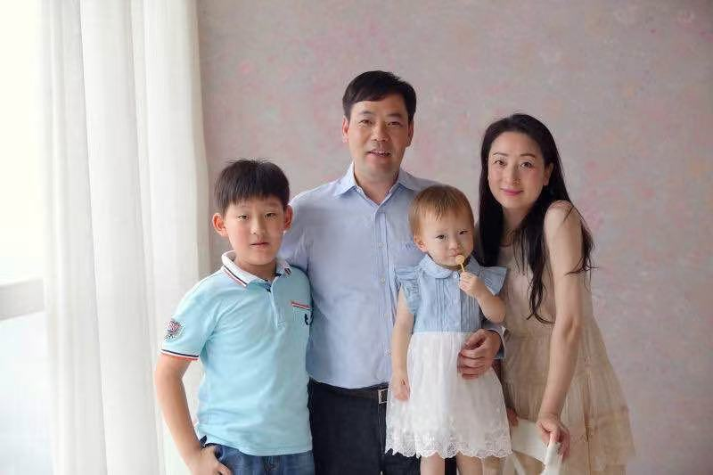
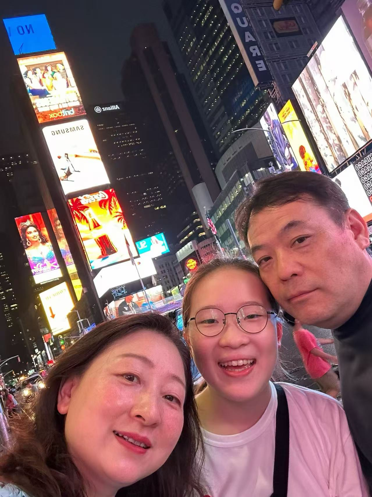
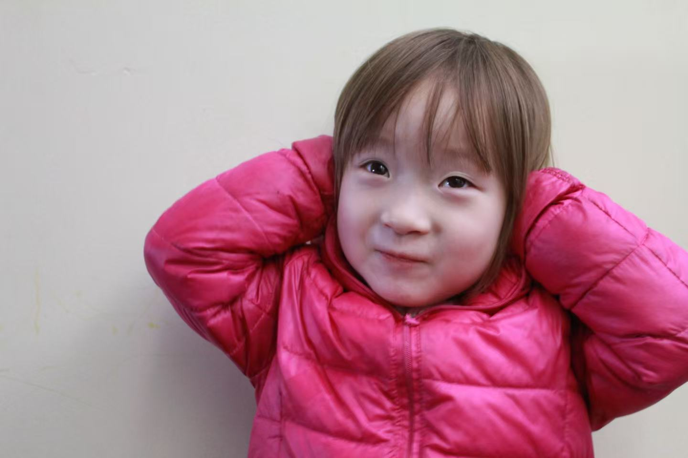

和家人的时光
Family Moments
这里放的是我和家人在日常与旅行中的照片。对我来说，家人一直是最稳定也最重要的支持来源。
These are moments from daily life and trips with my family. Their support has always been one of the most important constants in my life.



这里放的是我和家人在日常与旅行中的照片。对我来说，家人一直是最稳定也最重要的支持来源。
These are moments from daily life and trips with my family. Their support has always been one of the most important constants in my life.


